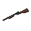

The Case File in the Fog
The interface is a dossier on a missing sister, set down on a table in Hollowmere's fog. Warm bone on a near-black folder, one blood-rust action, one lantern-amber selection. Everything is drawn, everything is rounded, and the grain passes over all of it.
Source of truth: DESIGN.md (tokens and rules) and scripts/menu_draw.gd / scripts/icons.gd (the code that draws them). Every size here is in base pixels of the 640×360 canvas. Component specimens are shown at 2× so they can be read on a monitor.
Colour palette
Few colours, strict roles. Everything not listed here is Bone at a lowered alpha.
Action and selection
Neutrals and surfaces
Surface tiers (Bone at alpha, on the folder)
Game-state colours (HUD)
Speaker colours (subtitles)
Each speaker has a colour, and the name is always written too, so colour is never the only cue (RNF-05).
Colour rules
A page has at most one rust surface that acts: its primary bar. Elsewhere, rust is only a signal (Mark chip, pin, logo rule).
Amber marks exactly what is chosen or live right now. Never decoration, never an action fill, never body text.
Text the player needs is Bone or Muted Bone. Faint Bone means "not yet" and carries no words.
Typography
Two faces, two voices. IM Fell English, a 17th-century printed serif with ink spread, speaks for the world. Barlow Semi Condensed, a narrow, sturdy grotesque that reads at 7px, runs the controls. Both are bundled under the OFL in fonts/.
Hollowmere is beautiful. Don't come.
RESUME · EQUIP · 5 / 12 · MARK 34%
Type scale (base px; samples at 2×)
No functional text is smaller than 7 base pixels. Anything smaller doesn't survive the scale-down to a laptop window.
IM Fell speaks in the world: names, headings, ledes, captions, handwriting. Barlow operates the UI: labels, values, keys. A control is never set in the serif.
Layout & spacing
The canvas is 640×360 base units with aspect expand: extra width grows the canvas and the right-anchored folder keeps its gutter. The Fog Owns the Left: only the logo and the scene caption sit on the fog; every control lives on the folder or in the letterbox.
(folder 222 × 292, pad 15)
| Token | Value | Use |
|---|---|---|
| hairline | 1 | Focus outline, keycap outline, tick marks |
| chip-gap | 4 | Between chips in a row; tabs overlap the folder by 4 |
| page-shift | 14 | How far a page slides in the leaf turn; toasts slide in by 14 |
| pad | 15 | The folder's inner padding on all sides |
| line | 17 | Options and Dev line pitch (16 tall), 12 visible |
| letterbox | 18 | Black bars top and bottom |
| gutter-left / right | 32 / 36 | Logo and caption gutter / folder and help-bar gutter |
| Row pitches | 34 · 36 · 38 | Difficulty rows (30 tall) · load rows (32 tall, 6 visible) · achievement rows (36 tall, 4 columns) |
| Weapon cells | 29 × 22 @ 32 | Continue page's weapons carried |
Shape & elevation
Every surface is a rounded rectangle (Icons.round_rect, 5 points per corner, antialiased). Radii scale with the surface; anything 14 or less tall that holds a fact is a full pill. Index tabs are rounded only on their outside edge. The photo print is the one tilted shape.
Three stacked rounded fills of black at 16%, grown 2, 5 and 8, pulled down. Soft and mostly downward.
One fill of black at 45%, offset (1, 3), radius 3, under the tilted print.
A shadowed surface never also gets a 1px border. Outlines belong to unshadowed things: keycaps, focus, closed tabs.
Icons
Two sets, one hand. The drawn set (scripts/icons.gd) sits on a 24-unit grid with a 2-unit stroke and a 1px minimum, built from lines, outlines, fills, circles, arcs and rounded boxes. Weapons are drawn side-on facing right. A new icon is added on the same grid, never as a glyph or a font character. These are rendered below from the game's own data.
The rendered set (ui/icons/*.png) is made by tools/shot.gd -- --icons from each item's 3D model in the PS2 look. It is used where an item needs to be recognised as an object: the HUD weapon card, the belt, the wheel and the inventory.
| Context | Size | Stroke |
|---|---|---|
| Index tab | 12 | 1.3 |
| Chip | 9 | 1.1 |
| Primary bar | 10 | 1.4 |
| Weapon cell | 16 | 1.2 |
| Achievement | 13 | 1.2 |
| Difficulty flame | 10 | 1.1 |
Components
Every piece below is drawn by MenuDraw and shared by the main menu, the pause menu, the inventory and the Options page. Hover and click the specimens: they behave like the game.
Primary bar: the button
Anatomy: 26 tall, full page width, radius 8, pinned to the page's foot. Bone icon (10) at 15 from the left, Action caps label at 27, ENTER keycap 9 from the right at 90%. No border, no shadow. One per page.
Keycap
Chips, meters, switch, stepper
List rows
Index tabs
Panels and prints
Talk to Grady at the General Store
HUD pieces
The HUD uses the same palette and fonts over the live game, on Folder at 78% so the fog shows through.

Motion
| Moment | Duration | Curve | What moves |
|---|---|---|---|
| Title → dossier | 0.45 s | in-out | The logo drifts from the centre to the top left and scales 1.35 → 1; its rule and HOLLOWMERE slide flush left; the folder slides in from +260 |
| Leaf turn | 0.18 s | ease-out | The outgoing page slides 14 left and fades; the incoming slides in from 14 right. The outgoing page can't be clicked |
| Scene (title backdrop) | 11 s / shot | linear | 1.5 s fades to and from black; the caption arrives 2 s in and leaves 2 s before the end; a handheld drift and roll of ±0.01 rad |
| PRESS ANY KEY | 2.6 rad/s | sine | Opacity 55–100% |
| Selection wheel | 90 ms (real time) | linear | Grey, blur and the wheel fade in while the game slows to 25% |
| Weapon swap | 0.4 s | linear | An amber outline flares around the weapon card and fades |
| Health trail | 0.45 s hold | then drain | The pale trail holds what a hit took, then drains to the new value |
| Toast | — | ease-out | Slides in 14 from the left |
Texture: the PS2 material
The Texture Over Everything Rule. The world's material is applied last and to the whole frame, UI included. Nostalgia comes from the texture; modernity comes from the craft under it.
ps2_post.gdshader · over the townGrain 0.07, vignette 0.6, colour cut to 32 levels with a 4×4 Bayer dither. The 3D renders at 640×360 with nearest filtering for chunky pixels. "Film grain & vignette" in Options scales it.
menu_crt.gdshader · over the menusScanlines at 16% on every second physical row, a slow 5% rolling band, grain 0.07, vignette 1.1, a 0.0006 UV colour fringe. Over the town and the UI together.
Do's & don'ts
Do
- Draw menus in
canvas_itemsscale so type is crisp, keep the 3D in its 640×360 viewport, and restoreviewportscale on exit. - Keep every functional label at 7 base px or larger, in Bone or Muted Bone.
- Give each page at most one rust bar, pinned to its foot, with its icon and ENTER keycap.
- Use amber for exactly what is chosen or live.
- Build surface tiers from Bone at low alpha rather than new greys.
- Draw every icon from
Icons.SETand every surface withIcons.round_rect. - Show only real data, with honest empty states ("No case open").
- Let grain, dither, scanlines and vignette cover the UI too.
Don't
- Don't put an eyebrow or kicker label above a heading. The heading and lede carry the page.
- Don't set needed text in Faint Bone.
- Don't add a border to a shadowed surface (folder, print).
- Don't use amber as decoration or an action fill, and don't add a second rust button.
- Don't use glyph or font icons, system fonts, or square panels. The UI is never only squares and text.
- Don't place controls on the fog. The left belongs to the scene.
- Don't carry meaning by colour alone. Pair it with an icon, a shape or a word.
Known drift (not part of the system)
- Subtitles, banners, the interaction prompt and the boss bar still use the fallback font.
- Keycap labels are drawn at 6px, below the 7px floor.
- The Extra page's focused achievement uses a Bone ring where the Lantern Rule calls for amber.
- The scene caption's source line uses a one-off rust-pink (#d98070) outside the palette.